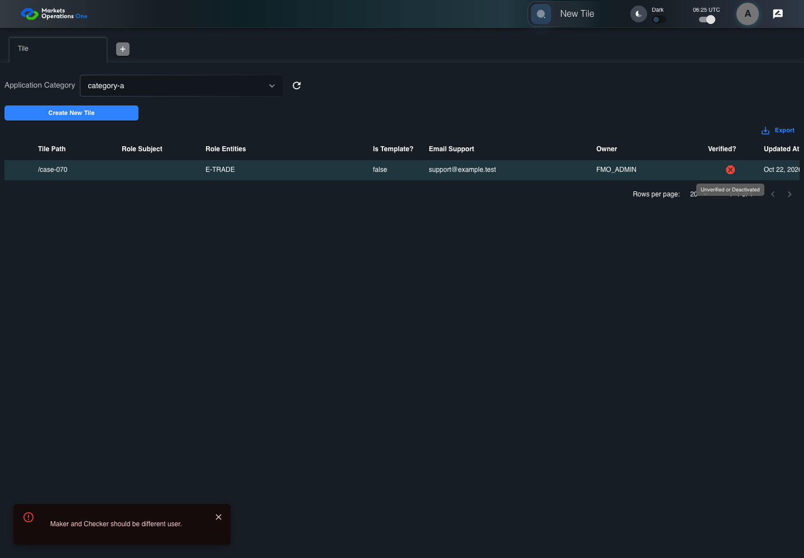
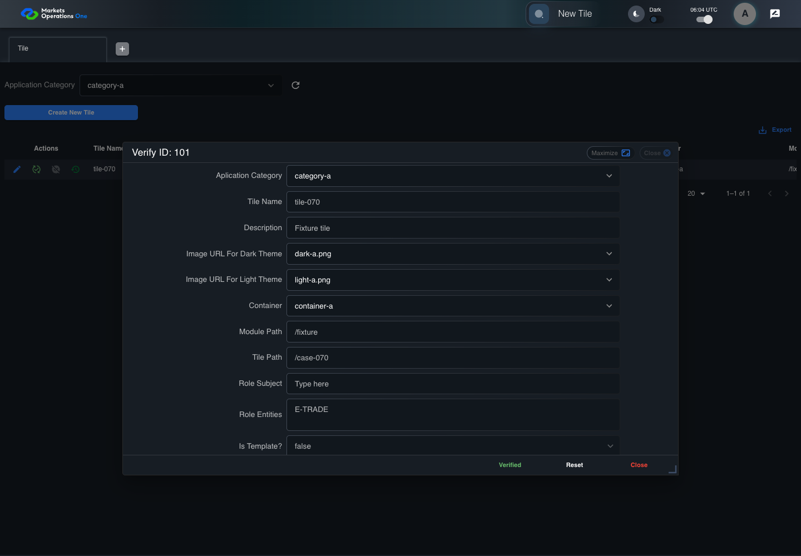
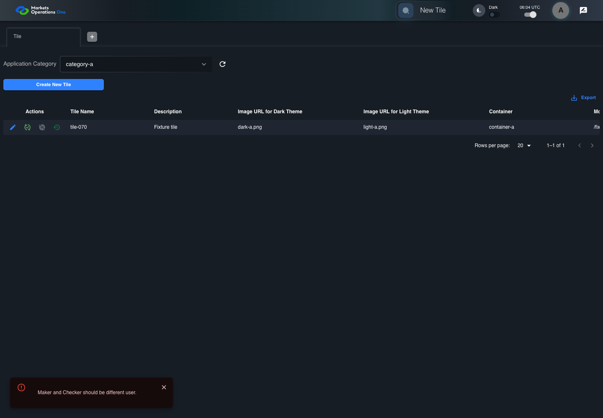

All canonical cases
BFF-ADM-070: Reject case-only self-verification of Tile Business acceptance remains unverified. Owner: unknown. Review the canonical definition and fixture limits before acceptance.
Latest local result: PASS Business acceptance: NOT_ESTABLISHED.
The latest local result describes execution. The historical definition review assesses the case design before execution.
Latest step screenshot bindings: COMPLETE . 19/19 canonical steps have execution screenshots.
Bindings measure structural coverage only. They do not establish screenshot content quality or relevance.
Screenshot content review: NOT_REVIEWED . Recorded context does not establish human visual review.
Canonical Gherkin definition . Definition version: 2. SHA-256: fd5095d5ee71de3756798d522b3983081b5898e182a02f513fcd187848b2945e.
Historical definition review (preflight): UNVERIFIED A definition review FAIL can coexist with local PASS. The definition failed preflight quality checks.
This historical review does not change the latest execution result. Resolve definition gaps before business acceptance.
Canonical Gherkin steps Feature: Admin authority
@BFF-ADM-070
Scenario: Reject case-only self-verification of Tile
Given Admin A uses subject "admin-a" with role "FMO_ADMIN" in an isolated authenticated browser
And the controlled Tile fixture records the initial grid rows and persisted values
And Category 101 has label "category-a" and Import Map 201 has Module Name "container-a"
And both references belong to "FMO_ADMIN" and the Tile page category filter value is Category 101
And the Tile grid has record "101" owned by "FMO_ADMIN"
And the baseline fixture data defines "Tile Name" as "tile-070"
And the baseline fixture data defines "Module Path" as "/fixture"
And the baseline fixture data defines "Tile Path" as "/case-070"
And the baseline fixture data defines "Role Entities" as "E-TRADE"
And the baseline fixture data defines "Filter Rule" as ""
And the baseline Tile references use "Aplication Category" "category-a" and "Container" "container-a"
And Tile record "101" is inactive when this browser loads its grid
And its stored "updatedBy" value is "ADMIN-A"
When Admin A clicks the button labeled "Verify" in the Tile grid row with "Record Id" "101"
Then the dialog titled "verify ID: 101" is visible on the Tile administration page
When Admin A clicks the button labeled "Verified" in dialog "verify ID: 101"
Then the alert with severity "error" in the portal snackbar contains the exact text "Maker and Checker should be different user."
And in the Tile data grid with column "Record Id", the "Verified?" cell for Tile record "101" has status tooltip "Unverified or Deactivated" on the Tile administration page
And the persisted-record readback for record "101" has "active" equal to false Acceptance and evidence limits: NO_COMPLETE_REAL_APPLICATION_BINDING, CANONICAL_REVIEW_OR_EVIDENCE_UNRESOLVED.
Planned essential canonical frames: 3. Plan completeness requires separate review.
Latest attempt BFF-ADM-070 current BFF administration through actual UI PASS · application/run-072/bff-adm-070-current-bff-administration-through-actual-ui-38ff91dab450-attempt-1 · ACTUAL_APPLICATION_LOCAL_SERVICES
Actual current React and exact-current BFF admin controllers/services/JPA with actual migration DDL in disposable PostgreSQL. Controlled OUD/EMS2 identities and local Spring bootstrap. Fixture SQL seeds/mutates isolated records; service errors are actual database errors. Undefined agreed messages remain unresolved acceptance.
2026-10-22T06:46:21.328Z to 2026-10-22T06:46:26.610Z
Assertions and result · Artifact manifest · Exact run inputs and source hashes
Result SHA-256: 933acc1eabc5850cbc544b25d70800e33e44810f7528c5cee79b28eb0ad0eec3 Playwright trace
Machine observations Screenshot capture: CAPTURED. Named frames: 20.
Step screenshot bindings: COMPLETE. 19/19 canonical steps have execution screenshots.
Bindings measure structural coverage only. They do not establish screenshot content quality or relevance.
Screenshot content review: NOT_REVIEWED . Recorded context: 0/20 frames. Identical image bytes: 0 repeated frames. Recorded context does not establish human visual review.
Canonical step timeline Given Admin A uses subject "admin-a" with role "FMO_ADMIN" in an isolated authenticated browser
1. step-01 Visible state after step 1: Given Admin A uses subject "admin-a" with role "FMO_ADMIN" in an isolated authenticated browser
2026-10-22T06:46:24.300Z · 1440×100048683e34d8da1e087c1ca15f1af3ca8e43489e43681559087258bee148980eae And the controlled Tile fixture records the initial grid rows and persisted values
2. step-02 Visible state after step 2: And the controlled Tile fixture records the initial grid rows and persisted values
2026-10-22T06:46:24.433Z · 1440×1000fb1c46420e93566be561e7d1d84f35becfd2bd041bd302b650017a7b995e6a01 And Category 101 has label "category-a" and Import Map 201 has Module Name "container-a"
3. step-03 Visible state after step 3: And Category 101 has label "category-a" and Import Map 201 has Module Name "container-a"
2026-10-22T06:46:24.482Z · 1440×10008484e02b65ae8a3c5d98a0f650d2e51d19a1ec33f6bbdbd92a9b0a216c952629 And both references belong to "FMO_ADMIN" and the Tile page category filter value is Category 101
4. step-04 Visible state after step 4: And both references belong to "FMO_ADMIN" and the Tile page category filter value is Category 101
2026-10-22T06:46:24.533Z · 1440×10007010fb0c6e0784c0f0c7447cffc01f2173a93656086eb5a8d2a6f97906ea2302 And the Tile grid has record "101" owned by "FMO_ADMIN"
5. step-05 Visible state after step 5: And the Tile grid has record "101" owned by "FMO_ADMIN"
2026-10-22T06:46:24.581Z · 1440×1000312162dfa540e218e2cee0934afa26b390c2626426aad5bc7e55c13ad0bf7032 And the baseline fixture data defines "Tile Name" as "tile-070"
6. step-06 Visible state after step 6: And the baseline fixture data defines "Tile Name" as "tile-070"
2026-10-22T06:46:24.640Z · 1440×10007dd50a9cf7fddc689208984c1e0529e258724f20df42d9aac17babfd14caefc2 And the baseline fixture data defines "Module Path" as "/fixture"
7. step-07 Visible state after step 7: And the baseline fixture data defines "Module Path" as "/fixture"
2026-10-22T06:46:24.696Z · 1440×100089a6802803cecb597986b659b3ba795160593fc2ddb958e5d843bfd2c995ba0b And the baseline fixture data defines "Tile Path" as "/case-070"
8. step-08 Visible state after step 8: And the baseline fixture data defines "Tile Path" as "/case-070"
2026-10-22T06:46:24.747Z · 1440×1000f5af783495f4dc3167a34a44b2d631ed6edaa808eefc7d07406b2892cda547b6 And the baseline fixture data defines "Role Entities" as "E-TRADE"
9. step-09 Visible state after step 9: And the baseline fixture data defines "Role Entities" as "E-TRADE"
2026-10-22T06:46:24.797Z · 1440×100016a80cd8fb6225bdfceeb456d1ce1751055dc3f0ee41d958bf653281dcb2f00c And the baseline fixture data defines "Filter Rule" as ""
10. step-10 Visible state after step 10: And the baseline fixture data defines "Filter Rule" as ""
2026-10-22T06:46:24.849Z · 1440×100069ff7768d04c0f35b8d01decda5c65200af290a6f48f957f897632fc1955b09c And the baseline Tile references use "Aplication Category" "category-a" and "Container" "container-a"
11. step-11 Visible state after step 11: And the baseline Tile references use "Aplication Category" "category-a" and "Container" "container-a"
2026-10-22T06:46:24.903Z · 1440×1000a2ff32b73ccec31be35b4a14fd3186b6a37f9e27b7ee1d41f5f430ccf20019ab And Tile record "101" is inactive when this browser loads its grid
12. step-12 Visible state after step 12: And Tile record "101" is inactive when this browser loads its grid
2026-10-22T06:46:24.953Z · 1440×1000023a5b3f23b6b0d9f6384f869cb0c11803b1781e097b7c8d75c20d74f87c4f43 And its stored "updatedBy" value is "ADMIN-A"
13. step-13 Visible state after step 13: And its stored "updatedBy" value is "ADMIN-A"
2026-10-22T06:46:25.006Z · 1440×1000b41bb9932e7ced6ce981b78ebaf9e797660fde2e71b5a8b5d6f75489fa1a7d62 When Admin A clicks the button labeled "Verify" in the Tile grid row with "Record Id" "101"
14. step-14 Visible state after step 14: When Admin A clicks the button labeled "Verify" in the Tile grid row with "Record Id" "101"
2026-10-22T06:46:25.312Z · 1440×100096ea7e84debe8199bfc9251a12a0f1ed90bea1f4e6f37884cfacfb2560b88a32 Then the dialog titled "verify ID: 101" is visible on the Tile administration page
15. step-15 Visible state after step 15: Then the dialog titled "verify ID: 101" is visible on the Tile administration page
2026-10-22T06:46:25.385Z · 1440×100025b4999787f9d9c30ce73a2078986004da43bb60a15dbe00929cc4b279013d62 When Admin A clicks the button labeled "Verified" in dialog "verify ID: 101"
16. step-16 Visible state after step 16: When Admin A clicks the button labeled "Verified" in dialog "verify ID: 101"
2026-10-22T06:46:25.586Z · 1440×10009470e8be9c765a0eeabaf2c826a3efca9722906a233458cf840762c3682549e2 Then the alert with severity "error" in the portal snackbar contains the exact text "Maker and Checker should be different user."
17. step-17 Visible state after step 17: Then the alert with severity "error" in the portal snackbar contains the exact text "Maker and Checker should be different user."
2026-10-22T06:46:25.653Z · 1440×10000937651946bf4dc09aa6ebeba550bb36882a41c30337c442e08c615f9d7f8e0e And in the Tile data grid with column "Record Id", the "Verified?" cell for Tile record "101" has status tooltip "Unverified or Deactivated" on the Tile administration page
18. step-18 Visible state after step 18: And in the Tile data grid with column "Record Id", the "Verified?" cell for Tile record "101" has status tooltip "Unverified or Deactivated" on the Tile administration page
2026-10-22T06:46:26.121Z · 1440×1000a4e4a3e8cdbcc6ba4eec4980c2b13aea453d1603ca99ed67cbab551281530bf9 And the persisted-record readback for record "101" has "active" equal to false
19. step-19 Visible state after step 19: And the persisted-record readback for record "101" has "active" equal to false
2026-10-22T06:46:26.166Z · 1440×1000c7696ea78ee4180b0ca22997f02494684bbed6274c7f8a1a6f68908e18bf2ecf Additional named frames 20. final-result The final visible state after the named test assertions.
2026-10-22T06:46:26.234Z · 1440×1000f79a4b68f0997bb13fb89c2dede9107efbc447f3eccba7e938b106e9326b48e3 Screenshots establish visible state only. Assertions and traces support functional claims.
Earlier attempt history (2) Earlier attempt PASS (superseded by latest PASS) BFF-ADM-070 current BFF administration through actual UI PASS · application/run-066/bff-adm-070-current-bff-administration-through-actual-ui-38ff91dab450-attempt-1 · ACTUAL_APPLICATION_LOCAL_SERVICES
Actual current React and exact-current BFF admin controllers/services/JPA with actual migration DDL in disposable PostgreSQL. Controlled OUD/EMS2 identities and local Spring bootstrap. Fixture SQL seeds/mutates isolated records; service errors are actual database errors. Undefined agreed messages remain unresolved acceptance.
2026-10-22T06:25:49.035Z to 2026-10-22T06:25:52.436Z
Assertions and result · Artifact manifest · Exact run inputs and source hashes
Result SHA-256: 849bc92e2c8a8bd9b336c79fbea4d325b17707abb264e8a2460fdf9c87acaf7a Playwright trace
Machine observations Screenshot capture: CAPTURED. Named frames: 20.
Step screenshot bindings: COMPLETE. 19/19 canonical steps have execution screenshots.
Bindings measure structural coverage only. They do not establish screenshot content quality or relevance.
Screenshot content review: NOT_REVIEWED . Recorded context: 0/20 frames. Identical image bytes: 5 repeated frames. Recorded context does not establish human visual review.
Canonical step timeline Given Admin A uses subject "admin-a" with role "FMO_ADMIN" in an isolated authenticated browser
1. step-01 Visible state after step 1: Given Admin A uses subject "admin-a" with role "FMO_ADMIN" in an isolated authenticated browser
2026-10-22T06:25:50.686Z · 1440×1000e2bc23cf0e305ed55e1187a148cf4904eddbf516cbb7cca2b590ecd6ff3ebc74 And the controlled Tile fixture records the initial grid rows and persisted values
2. step-02 Visible state after step 2: And the controlled Tile fixture records the initial grid rows and persisted values
2026-10-22T06:25:50.786Z · 1440×1000aaa93b6624ea325952a2cc1e539cb548f39979f4f75fad1a911eaaed9b77b5e6 And Category 101 has label "category-a" and Import Map 201 has Module Name "container-a"
3. step-03 Visible state after step 3: And Category 101 has label "category-a" and Import Map 201 has Module Name "container-a"
2026-10-22T06:25:50.818Z · 1440×100079398b784d7d548ac15220513521939932dfb819aeae18ba8dbd2f773810b9eb And both references belong to "FMO_ADMIN" and the Tile page category filter value is Category 101
4. step-04 Visible state after step 4: And both references belong to "FMO_ADMIN" and the Tile page category filter value is Category 101
2026-10-22T06:25:50.850Z · 1440×100079398b784d7d548ac15220513521939932dfb819aeae18ba8dbd2f773810b9eb Image bytes match frame 3. An unchanged image can be valid for consecutive assertions. This match does not establish correct step content.
And the Tile grid has record "101" owned by "FMO_ADMIN"
5. step-05 Visible state after step 5: And the Tile grid has record "101" owned by "FMO_ADMIN"
2026-10-22T06:25:50.884Z · 1440×10008af45e0e5189d3b5fcc8c92b7a751566281be306e8bea4eeac355cc978e37d7b And the baseline fixture data defines "Tile Name" as "tile-070"
6. step-06 Visible state after step 6: And the baseline fixture data defines "Tile Name" as "tile-070"
2026-10-22T06:25:50.918Z · 1440×10008af45e0e5189d3b5fcc8c92b7a751566281be306e8bea4eeac355cc978e37d7b Image bytes match frame 5. An unchanged image can be valid for consecutive assertions. This match does not establish correct step content.
And the baseline fixture data defines "Module Path" as "/fixture"
7. step-07 Visible state after step 7: And the baseline fixture data defines "Module Path" as "/fixture"
2026-10-22T06:25:50.951Z · 1440×10001e1270b8b1b6c6cdfbf6c966e22d91ef7a921a20bac2750e0f232eb26521d290 And the baseline fixture data defines "Tile Path" as "/case-070"
8. step-08 Visible state after step 8: And the baseline fixture data defines "Tile Path" as "/case-070"
2026-10-22T06:25:50.984Z · 1440×10001e1270b8b1b6c6cdfbf6c966e22d91ef7a921a20bac2750e0f232eb26521d290 Image bytes match frame 7. An unchanged image can be valid for consecutive assertions. This match does not establish correct step content.
And the baseline fixture data defines "Role Entities" as "E-TRADE"
9. step-09 Visible state after step 9: And the baseline fixture data defines "Role Entities" as "E-TRADE"
2026-10-22T06:25:51.018Z · 1440×1000ff6564bda17ec1946364c707596df8a7d891e7b2f4f4b8d4821af38bded60b41 And the baseline fixture data defines "Filter Rule" as ""
10. step-10 Visible state after step 10: And the baseline fixture data defines "Filter Rule" as ""
2026-10-22T06:25:51.051Z · 1440×1000ff6564bda17ec1946364c707596df8a7d891e7b2f4f4b8d4821af38bded60b41 Image bytes match frame 9. An unchanged image can be valid for consecutive assertions. This match does not establish correct step content.
And the baseline Tile references use "Aplication Category" "category-a" and "Container" "container-a"
11. step-11 Visible state after step 11: And the baseline Tile references use "Aplication Category" "category-a" and "Container" "container-a"
2026-10-22T06:25:51.084Z · 1440×10004ddd9da80ef569716750167b711c4dd3d9eefb1b105e71faff3077e1b86141d9 And Tile record "101" is inactive when this browser loads its grid
12. step-12 Visible state after step 12: And Tile record "101" is inactive when this browser loads its grid
2026-10-22T06:25:51.118Z · 1440×10004ddd9da80ef569716750167b711c4dd3d9eefb1b105e71faff3077e1b86141d9 Image bytes match frame 11. An unchanged image can be valid for consecutive assertions. This match does not establish correct step content.
And its stored "updatedBy" value is "ADMIN-A"
13. step-13 Visible state after step 13: And its stored "updatedBy" value is "ADMIN-A"
2026-10-22T06:25:51.151Z · 1440×10009af46c65914f66b7d777ded9f01209b77ec2fb010c29813a6a20840ae3db5e8b When Admin A clicks the button labeled "Verify" in the Tile grid row with "Record Id" "101"
14. step-14 Visible state after step 14: When Admin A clicks the button labeled "Verify" in the Tile grid row with "Record Id" "101"
2026-10-22T06:25:51.393Z · 1440×10001cd103bd9cdc559e00cd223847a0dd95ae8872a5851b29a56f726493667c88c3 Then the dialog titled "verify ID: 101" is visible on the Tile administration page
15. step-15 Visible state after step 15: Then the dialog titled "verify ID: 101" is visible on the Tile administration page
2026-10-22T06:25:51.439Z · 1440×1000aa1da29e02c01758b1817f9a16f57d4c991b9b8f9af0ce4addea057f8191c89f When Admin A clicks the button labeled "Verified" in dialog "verify ID: 101"
16. step-16 Visible state after step 16: When Admin A clicks the button labeled "Verified" in dialog "verify ID: 101"
2026-10-22T06:25:51.652Z · 1440×10008d1ecb01c0ed57f7ad955c39e6e95caa8f4e0f90731fba1e76bd4ee13fbbbe5d Then the alert with severity "error" in the portal snackbar contains the exact text "Maker and Checker should be different user."
17. step-17 Visible state after step 17: Then the alert with severity "error" in the portal snackbar contains the exact text "Maker and Checker should be different user."
2026-10-22T06:25:51.685Z · 1440×100084ae6300660234a41a99c6e567148989805c3e445b23e4782c95e7e00522dcbe And in the Tile data grid with column "Record Id", the "Verified?" cell for Tile record "101" has status tooltip "Unverified or Deactivated" on the Tile administration page

18. step-18 Visible state after step 18: And in the Tile data grid with column "Record Id", the "Verified?" cell for Tile record "101" has status tooltip "Unverified or Deactivated" on the Tile administration page
2026-10-22T06:25:52.109Z · 1440×1000756a55590316bd02c886fe25c708e3ec2f393cbf6e7ec064551b37ee13432d90 And the persisted-record readback for record "101" has "active" equal to false
19. step-19 Visible state after step 19: And the persisted-record readback for record "101" has "active" equal to false
2026-10-22T06:25:52.155Z · 1440×10005e80f1a431ee5b3ed6235e40edebeaab4a7429efe41bff8a59268a4a201e0ea8 Additional named frames 20. final-result The final visible state after the named test assertions.
2026-10-22T06:25:52.220Z · 1440×1000fad6952855792247f99054cf2e59cf99e3d9075ef870dc34a1e2b7204bc6bc71 Screenshots establish visible state only. Assertions and traces support functional claims.
Earlier attempt PASS (superseded by latest PASS) BFF-ADM-070 current BFF administration through actual UI PASS · application/run-062/bff-adm-070-current-bff-administration-through-actual-ui-38ff91dab450-attempt-1 · ACTUAL_APPLICATION_LOCAL_SERVICES
Actual current React and exact-current BFF admin controllers/services/JPA with actual migration DDL in disposable PostgreSQL. Controlled OUD/EMS2 identities and local Spring bootstrap. Fixture SQL seeds/mutates isolated records; service errors are actual database errors. Undefined agreed messages remain unresolved acceptance.
2026-10-22T06:04:16.723Z to 2026-10-22T06:04:21.391Z
Assertions and result · Artifact manifest · Exact run inputs and source hashes
Result SHA-256: 662b34d39dfa1984f2936eb80bfb6c11e37f3276be8fc9c0e4eedad5f044cddf Playwright trace
Machine observations Screenshot capture: CAPTURED. Named frames: 20.
Step screenshot bindings: COMPLETE. 19/19 canonical steps have execution screenshots.
Bindings measure structural coverage only. They do not establish screenshot content quality or relevance.
Screenshot content review: NOT_REVIEWED . Recorded context: 0/20 frames. Identical image bytes: 5 repeated frames. Recorded context does not establish human visual review.
Canonical step timeline Given Admin A uses subject "admin-a" with role "FMO_ADMIN" in an isolated authenticated browser
1. step-01 Visible state after step 1: Given Admin A uses subject "admin-a" with role "FMO_ADMIN" in an isolated authenticated browser
2026-10-22T06:04:18.643Z · 1440×1000b8dbf1e5ca02e3830a0c84001041362d0aaf9f25c20a599cb28866a68af8f6c5 And the controlled Tile fixture records the initial grid rows and persisted values
2. step-02 Visible state after step 2: And the controlled Tile fixture records the initial grid rows and persisted values
2026-10-22T06:04:18.773Z · 1440×10007f9bedfee4f9adb61b6b1a86a50b279de774014f142c53e50d8a59a217ef4c96 And Category 101 has label "category-a" and Import Map 201 has Module Name "container-a"
3. step-03 Visible state after step 3: And Category 101 has label "category-a" and Import Map 201 has Module Name "container-a"
2026-10-22T06:04:18.806Z · 1440×1000f2b3c30ece48ed0329164ade31433f8b7a3455cdb26b4d69688e4057ddd6076a And both references belong to "FMO_ADMIN" and the Tile page category filter value is Category 101
4. step-04 Visible state after step 4: And both references belong to "FMO_ADMIN" and the Tile page category filter value is Category 101
2026-10-22T06:04:18.856Z · 1440×1000f2b3c30ece48ed0329164ade31433f8b7a3455cdb26b4d69688e4057ddd6076a Image bytes match frame 3. An unchanged image can be valid for consecutive assertions. This match does not establish correct step content.
And the Tile grid has record "101" owned by "FMO_ADMIN"
5. step-05 Visible state after step 5: And the Tile grid has record "101" owned by "FMO_ADMIN"
2026-10-22T06:04:18.890Z · 1440×100056e53b7f56878cccaa6d42a7a2fb28b976f7c79ba7eaaef73bd5610a2e30a259 And the baseline fixture data defines "Tile Name" as "tile-070"
6. step-06 Visible state after step 6: And the baseline fixture data defines "Tile Name" as "tile-070"
2026-10-22T06:04:18.937Z · 1440×100056e53b7f56878cccaa6d42a7a2fb28b976f7c79ba7eaaef73bd5610a2e30a259 Image bytes match frame 5. An unchanged image can be valid for consecutive assertions. This match does not establish correct step content.
And the baseline fixture data defines "Module Path" as "/fixture"
7. step-07 Visible state after step 7: And the baseline fixture data defines "Module Path" as "/fixture"
2026-10-22T06:04:18.973Z · 1440×10006d755702ee910adc69574b50af4ff60736dcc2daf2b28d67aaea047c21c21c33 And the baseline fixture data defines "Tile Path" as "/case-070"
8. step-08 Visible state after step 8: And the baseline fixture data defines "Tile Path" as "/case-070"
2026-10-22T06:04:19.023Z · 1440×10006d755702ee910adc69574b50af4ff60736dcc2daf2b28d67aaea047c21c21c33 Image bytes match frame 7. An unchanged image can be valid for consecutive assertions. This match does not establish correct step content.
And the baseline fixture data defines "Role Entities" as "E-TRADE"
9. step-09 Visible state after step 9: And the baseline fixture data defines "Role Entities" as "E-TRADE"
2026-10-22T06:04:19.055Z · 1440×1000f699678401b51d3ae196265180e24e0ae07314a8d22d0e808d8c1582996633b5 And the baseline fixture data defines "Filter Rule" as ""
10. step-10 Visible state after step 10: And the baseline fixture data defines "Filter Rule" as ""
2026-10-22T06:04:19.090Z · 1440×1000f699678401b51d3ae196265180e24e0ae07314a8d22d0e808d8c1582996633b5 Image bytes match frame 9. An unchanged image can be valid for consecutive assertions. This match does not establish correct step content.
And the baseline Tile references use "Aplication Category" "category-a" and "Container" "container-a"
11. step-11 Visible state after step 11: And the baseline Tile references use "Aplication Category" "category-a" and "Container" "container-a"
2026-10-22T06:04:19.122Z · 1440×1000ad1e39a8a4e7c521454f48e6d02d9e9600f55f24307cb66b2cfaea292752b3fd And Tile record "101" is inactive when this browser loads its grid
12. step-12 Visible state after step 12: And Tile record "101" is inactive when this browser loads its grid
2026-10-22T06:04:19.157Z · 1440×1000ad1e39a8a4e7c521454f48e6d02d9e9600f55f24307cb66b2cfaea292752b3fd Image bytes match frame 11. An unchanged image can be valid for consecutive assertions. This match does not establish correct step content.
And its stored "updatedBy" value is "ADMIN-A"
13. step-13 Visible state after step 13: And its stored "updatedBy" value is "ADMIN-A"
2026-10-22T06:04:19.206Z · 1440×1000c7437b70c8c84f01de6d82dacfc06b034edca62a89794859796b0247981a23b3 When Admin A clicks the button labeled "Verify" in the Tile grid row with "Record Id" "101"

14. step-14 Visible state after step 14: When Admin A clicks the button labeled "Verify" in the Tile grid row with "Record Id" "101"
2026-10-22T06:04:19.499Z · 1440×10009055be6fa67266b34920be029e21e62a0b88128d715cb30568a0c169aa5b16c6 Then the dialog titled "verify ID: 101" is visible on the Tile administration page
15. step-15 Visible state after step 15: Then the dialog titled "verify ID: 101" is visible on the Tile administration page
2026-10-22T06:04:19.544Z · 1440×10007cbe048ac7b0e02021120781f87e2060c60854ff70ef233e58f01d0098b3f946 When Admin A clicks the button labeled "Verified" in dialog "verify ID: 101"

16. step-16 Visible state after step 16: When Admin A clicks the button labeled "Verified" in dialog "verify ID: 101"
2026-10-22T06:04:19.796Z · 1440×1000dd9c315fba9b2ac31a900c782ac0b88b22cc2e018df612b002c521ff233d2e16 Then the alert with severity "error" in the portal snackbar contains the exact text "Maker and Checker should be different user."
17. step-17 Visible state after step 17: Then the alert with severity "error" in the portal snackbar contains the exact text "Maker and Checker should be different user."
2026-10-22T06:04:19.864Z · 1440×10000e7ccb8d68fa65664a38586d5379869ad826e3eceda0fbbc16b9567c84fa1ac6 And in the Tile data grid with column "Record Id", the "Verified?" cell for Tile record "101" has status tooltip "Unverified or Deactivated" on the Tile administration page
18. step-18 Visible state after step 18: And in the Tile data grid with column "Record Id", the "Verified?" cell for Tile record "101" has status tooltip "Unverified or Deactivated" on the Tile administration page
2026-10-22T06:04:20.352Z · 1440×1000734bc6447b2bff7326c8427811e8b35b836e70df54af91891327760506a80dfe And the persisted-record readback for record "101" has "active" equal to false
19. step-19 Visible state after step 19: And the persisted-record readback for record "101" has "active" equal to false
2026-10-22T06:04:20.426Z · 1440×100082a8ece1f0eee785caa2164cdb6a0f64e8168b8f7462809c53f9854090f55529 Additional named frames 20. final-result The final visible state after the named test assertions.
2026-10-22T06:04:20.569Z · 1440×100088ebdc969f3d85c8563fbfd8d8f81bef5a5f32e88bf7963ddf4a3d0d643074ab Screenshots establish visible state only. Assertions and traces support functional claims.